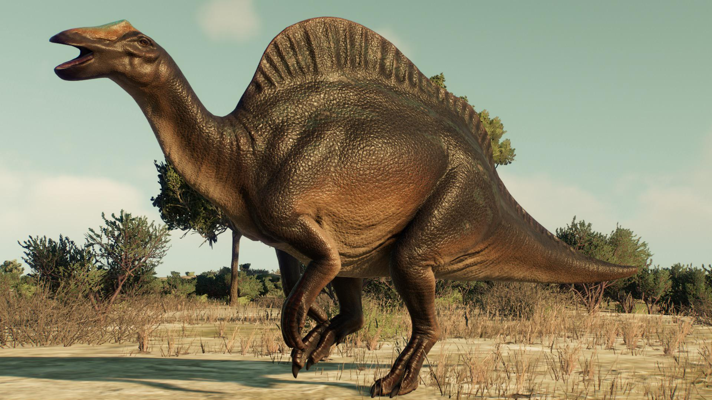
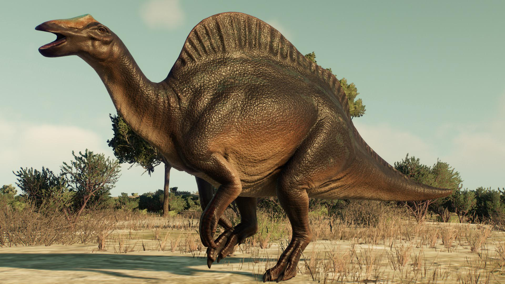

Română
Ouranosaurus, numit de Philippe Taquet în 1976, este un dinozaur din stadiile Aptian până la Cenomanian din perioada Cretacic. Fosilele sale au fost găsite în regiunea Echkar din Niger, Africa, cu specimene suplimentare descoperite în locații învecinate. Clasificată în Chordata, Reptilia, Dinosauria, Ornithischia, Ornithopoda, Styracosterna și Hadrosauriformes, singura specie recunoscută este O. nigeriensis. Ouranosaurus era un erbivor, contrar clasificării inițiale ca carnivor, măsurând 7 până la 8 metri lungime și un craniu lung de 67 de centimetri. Au fost găsite două exemplare aproape complete, oferind perspective detaliate asupra anatomiei sale. Ouranosaurus este remarcabil pentru structura sa asemănătoare pânzei pe spate, susținută de coloane neuronale alungite, care ar fi putut fi folosite pentru termoreglare sau afișare.
English
Ouranosaurus, named by Philippe Taquet in 1976, is a dinosaur from the Aptian to Cenomanian stages of the Cretaceous period. Its fossils have been found in the Echkar region of Niger, Africa, with additional specimens discovered in neighboring locations. Classified under Chordata, Reptilia, Dinosauria, Ornithischia, Ornithopoda, Styracosterna, and Hadrosauriformes, the only recognized species is O. nigeriensis. Ouranosaurus was an herbivore, contrary to the initial classification as a carnivore, measuring 7 to 8 meters in length with a 67-centimeter-long skull. Two almost complete specimens have been found, providing detailed insights into its anatomy. Ouranosaurus is notable for its sail-like structure on its back, supported by elongated neural spines, which might have been used for thermoregulation or display.